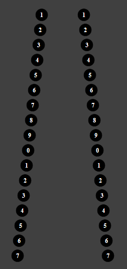

Распечатайте картинку, и повесьте таблицу на стену на уровне глаз.

Встаньте от нее на расстояние примерно 30 см и попытайтесь объединять пары шаров в один шар. Иными словами, каждый глаз должен смотреть на отдельный шар. Как только Вам удалось объединить верхнюю пару в один шар — спускайтесь ниже. Так попытайтесь спуститься как можно ниже. С каждой новой ступенькой вниз расслабляете мышцы хрусталика, делая изображении размытым как «по гауссу» (чтобы добиться этого эффекта смотрите словно сквозь лист вдаль), но не разъединенным.
Таким образом поднимитесь и спуститесь вниз несколько раз.